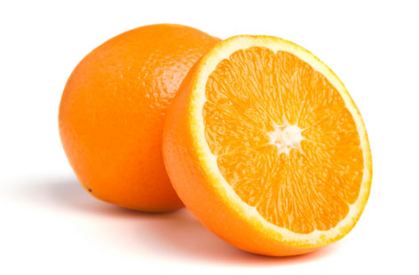

ORANGE के ये गुण जानेंगे तो रोजाना खाना चाहेंगे इसे ------
______________________________________________________
किसी भी दूसरे फल और सब्जी के मुकाबले संतरे में सबसे ज्यादा फाइबर होता है। यह पाचन में बेहद फायदेमंद होता है। इसके सूखे छिलके का महीन चूर्ण गुलाब जल या कच्चे दूध में मिलाकर उसका लेप लगाने से कुछ ही दिनों में चेहरा साफ और कांतिवान हो जाता है।एक व्यक्ति को जितने विटामिन सी की जरूरत होती है, वह एक संतरे से पूरी हो जाती है। संतरे के सेवन से दांतों और मसूड़ों के रोग भी दूर होते हैं।
यह बहुत जल्दी खराब होने वाला फल है। सामान्य तापमान में यह 3 से 4 दिन तक ठीक रहता है। फ्रिज में इसे 14 दिन तक रखा जा सकता है इसमें मौजूद फ्रक्टोज, खनिज एवं विटामिन शरीर में पहुंचते ही ऊर्जा देना शुरू कर देते हैं। इसका एक गिलास जूस तन-मन को शीतलता प्रदान कर थकान व तनाव दूर कर मस्तिष्क को नई शक्ति व ताजगी से संतरे के रस में भर देता है।एक चम्मच शहद डालकर प्रतिदिन लेने से कब्ज की शिकायत दूर होती है। संतरे के ताजे फूल को पीसकर उसको सिर में लगाने से बालों की चमक बढ़ती है। बाल जल्दी बड़े होते हैं और उनका कालापन भी बढ़ता है।
झुर्रियां रोकने में मदद मिलती है। इसमें विटामिन बी और फोलेट पाया जाता है, जो डिप्रेशन औरमाइग्रेन को दूर करने तथा नर्वस सिस्टम को स्वस्थ रखने में सहायक है।संतरे के मौसम में इसके नियमित सेवन से मोटापा कम होता है और बिना डाइटिंग किए ही आप अपना वजन कम कर सकते हैं। चॉकलेट और वनिला के बाद ऑरेंज दुनिया का तीसरा सबसे ज्यादा पसंद किया जाने वाला फ्लेवर है।
रोज एक संतरे का सेवन करने से
दुनिया में सबसे ज्यादा संतरा ब्राजील में उगाया जाता है। 100 ग्राम संतरे में 45 कैलोरी और 9 ग्राम शुगर होती है। गर्म प्रदेशों में संतरे का रंग हरा होता है, लेकिन स्वाद में वह बहुत मीठा होता है। तेज बुखार में संतरे के रस का सेवन करने से शरीर का तापमान कम हो जाता है। इसमें मौजूद साइट्रिक एसिड किडनी की बीमारियों को दूर करता है।